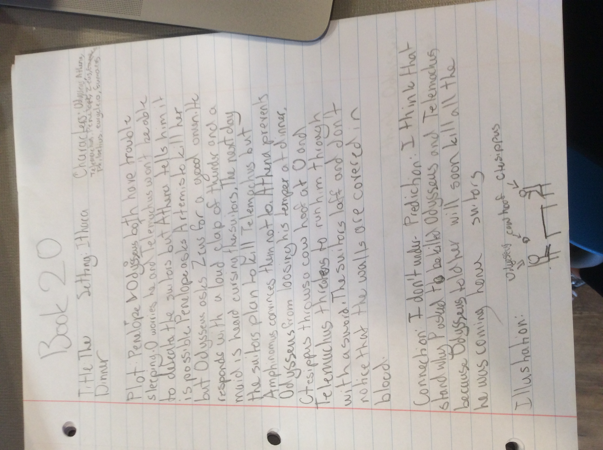

Goal
Literature Artifact
My literature artifact is my summary charts from The Odyssey Book 20. It is one of my better summary charts. It shows my new skill of working independently. We are not supposed to work together on our summary charts. This is one of my better charts because I worked really hard on this one. It is all my own work and no one elses summary charts would have the same title, summary or illustration. They might have the same characters and settings because we all had to do the same book but some might have some extra minor characters. This also represents my stretch getting better because at the beginning of the year I did all of the work the Sunday before it was due. On my better ones you can tell i didn't procrastinate because they are detailed and descriptive.
